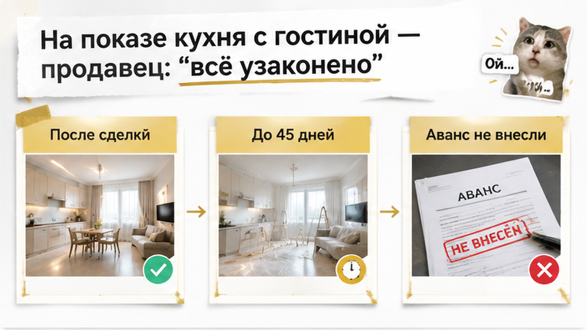
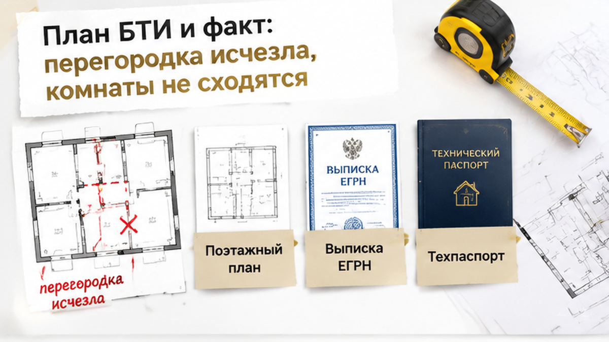
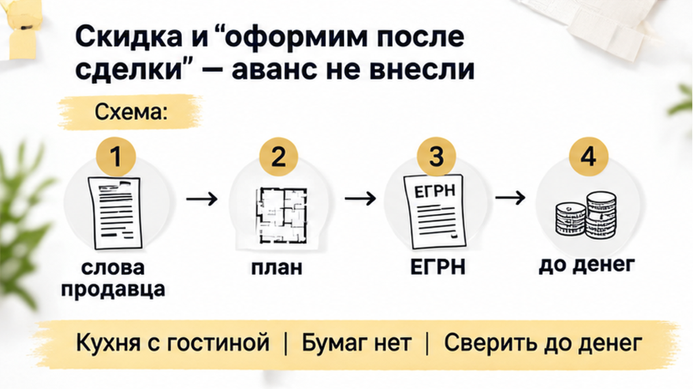

За 5 дней до аванса банк отказался принимать эту квартиру в залог — одобрение по объекту сняли. Дело было не в доходе семьи и не в кредитной истории. Ремонт свежий: ровные стены, светлая кухня-гостиная, фото в объявлении собрали десятки просмотров. Но оценщик сверил квартиру с поэтажным планом, и на бумаге оказалась другая квартира, с перегородкой, которой в жизни давно нет. Продавец предложил скидку и пообещал «оформить всё после сделки». Семья аванс не внесла, и это решение стало самым дешёвым во всей истории.
Я Святослав Шакин, The Риэлтор, Тюмень. Разбираю вторичку до аванса: план БТИ, ЕГРН, вопросы банку по объекту. Пишите в Telegram или в MAX.
Семья искала трёшку на вторичке в Тюмени. Ипотека предварительно одобрена, сумма и ставка понятны, платёжеспособность подтверждена. Казалось, осталось только выбрать квартиру.
Вариант нашёлся быстро. Ремонт «евро»: кухня объединена с гостиной, свет с двух сторон, современная планировка вместо советской «клетки». Цена в рынке, продавец готов выходить на сделку без долгих ожиданий.
И вот первая ловушка, на которой спотыкаются очень многие. Одобрение заёмщика и одобрение объекта — это две разные проверки. Сначала банк смотрит на человека: доход, нагрузку, историю. Квартиру как залог он проверяет отдельно и позже, уже после выбора: оценка, осмотр, техническая документация. «Да» по вам ещё не означает «да» по любой квартире, которую вы принесёте.

На показе покупатели спросили про объединённую кухню. Продавец ответил уверенно: «Всё узаконено, делали ещё при прошлом ремонте». Документов при себе не было. Но и повода сомневаться вроде бы тоже: квартира ухоженная, собственник спокойный, не торопит.
Только слова продавца ничего не подтверждают. Узаконенная перепланировка всегда оставляет след в бумагах: в поэтажном плане, экспликации, техническом паспорте, сведениях ЕГРН. Нет следа — значит, «всё узаконено» остаётся просто фразой. Даже если продавец сам искренне в неё верит.
Справедливости ради, не каждое объединение кухни с гостиной одинаково проблемно. Многое зависит от дома: есть ли газ, как устроена вентиляция, задеты ли несущие стены. Где-то такую перепланировку согласовывают без сложностей, где-то она невозможна в принципе. Но выяснять это нужно до денег, а не после. У нас похожая история уже доходила до отказа в регистрации: в Тюмени купили квартиру с открытой кухней, Росреестр отказал в регистрации.

Квартиру выбрали, банк назначил оценку. Оценщик не просто фотографирует для отчёта: он сопоставляет реальные помещения с планами. В этой трёшке на плане БТИ между кухней и гостиной стояла перегородка. В жизни её не было. Комнаты на бумаге и в квартире перестали совпадать.
Такое расхождение попадает в отчёт, и о нём узнаёт банк. Именно здесь многие сделки впервые «спотыкаются», хотя проблема существовала задолго до появления покупателя. Похожий сюжет мы разбирали в материале автооценка квартиры на два миллиона ниже рынка.
Хорошая новость: расхождение обычно видно ещё до оценщика, если знать, куда смотреть. На плане есть перегородка, а в квартире её нет. Дверной проём перенесён. Две комнаты объединены. Санузел устроен иначе. Площадь или форма комнаты заметно отличается от экспликации. Любой такой пункт — сигнал сверить план с квартирой своими глазами.
До аванса оставалось пять дней. Дату согласовали с продавцом, расписку набросали черновиком, семья уже прикидывала переезд из съёмной двушки.
Оценщик приехал на повторный замер с рулеткой и планом, сфотографировал проём между кухней и гостиной. Через два дня отчёт ушёл в банк с короткой строкой: фактическая планировка не соответствует технической документации. Ещё через день менеджер сообщил, что решение по объекту пересмотрено.
Вот здесь важно не перепутать. Предварительное одобрение ипотеки относится к человеку, а не к каждой квартире, которую он выберет. Семья по-прежнему подходила для кредита. Отказ касался квартиры как залога. Объект проходит свою проверку: оценку, сверку документов, иногда осмотр. Общую рамку оценки залога задаёт федеральный закон об ипотеке, а требования к конкретной квартире каждый банк формулирует сам. Если реальная квартира не совпадает с бумажной, банк вправе её в залог не принять. Точно так же одобрение не гарантирует и регистрацию: «Ипотеку одобрили, а регистрацию отменили: строка в ЕГРН».
На письменный запрос банк ответил коротко: объект в текущем виде не рассматривается как залог до приведения документов в соответствие. Без сроков и без обещаний.
Сомневаетесь, совпадает ли квартира с планом БТИ? Пришлите план и фото, разберём до аванса: Telegram · MAX

Продавец предложил скидку и пообещал после сделки сам заняться узакониванием: «Это формальность, перегородку просто нарисуют заново».
Если называть вещи своими именами, это было предложение купить чужую проблему со скидкой. Перепланировка в многоквартирном доме по статье 26 Жилищного кодекса проводится по согласованию. Узаконить её задним числом получается не всегда: всё упирается в дом, несущие стены, вентиляцию и газ, а иногда требуют вернуть стену на место. Штраф для граждан по части 2 статьи 7.21 КоАП небольшой, от 2 000 до 2 500 ₽. Главный риск не в нём. Ипотеку под такую квартиру не дадут, а после покупки предписание и расходы на восстановление лягут уже на нового собственника.
Сроки тоже не сходились. В Тюмени муниципальная услуга по согласованию перепланировки занимает до 45 календарных дней, и это лишь один этап: до него нужен проект, после — акт о завершении работ и изменения в ЕГРН. За пять дней такое не делается никак.
Семья аванс не внесла. Деньги остались на счёте, а поиск продолжился уже по другому порядку: сначала план и экспликация, потом показ. Остановиться до передачи денег оказалось проще всего, как и в истории «В Тюмени поддельное согласие супруги остановило сделку перед авансом».
Если ремонт красивый, а план БТИ старый, вы внесли бы аванс под обещание продавца узаконить перепланировку или остановили сделку?
Эта тюменская история закончилась без потерь по одной причине: отказ банка пришёл раньше аванса. Повезло со сроками, а не с порядком действий. Поэтому сверку делаем до любого платежа, а не «параллельно с оформлением». Фраза «всё узаконено» без бумаги ничего не доказывает.
Что просим у продавца до аванса:
Дальше план кладём рядом с квартирой и идём стена за стеной, с рулеткой в руках. Каждую цифру экспликации проверяем по месту, каждый проём — по чертежу. Если хоть что-то не сходится, это почти наверняка окажется в отчёте оценщика: он сверяет помещения с теми же документами. А насколько серьёзно объединение кухни, решает сам дом: газ, вентиляция, несущие стены.
Похожий случай, где объединённая кухня всплыла уже на регистрации, мы разбирали в материале про отказ Росреестра из-за открытой кухни. Там деньги уже были в процессе, и ошибка обошлась дороже.
Для покупателя штраф за самовольную перепланировку не главное: он небольшой. Главное, что квартира может не устроить банк как залог, и тогда разваливается вся схема покупки. Поэтому вопросы ниже лучше задать до того, как деньги уйдут продавцу.
| Что проверить | Где смотреть | Что спросить |
|---|---|---|
| Совпадают ли стены и проёмы | Поэтажный план, экспликация | Продавца: какой документ отражает текущую планировку? |
| Площадь и состав помещений | ЕГРН, техдокументация | Продавца: почему цифры расходятся, если расходятся? |
| Газ, вентиляция, несущие стены | Техдокументы на дом и квартиру | Специалиста: допустимо ли такое объединение в этом доме? |
| Согласование перепланировки | Решение администрации и отметка о завершении | Продавца: есть ли решение и внесены ли изменения в ЕГРН? |
| Сроки узаконивания в Тюмени | Официальные услуги admtyumen | Себя: готов ли я ждать? Муниципальное решение занимает до 45 календарных дней, и это срок одной услуги, а не всего цикла. |
| Позиция банка по объекту | Письменный ответ банка | Банк: примете ли вы эту квартиру в залог с текущей планировкой? |
Последняя строка в таблице самая важная. Решение по конкретной квартире банк принимает сам, после оценки, осмотра и проверки техдокументов. Устное «у вас же одобрено» от менеджера мало что значит. Нужен письменный ответ по этому адресу. Как одобрение и регистрация могут разойтись, мы писали в разборе про одобренную ипотеку и отменённую регистрацию.
Теперь про «узаконим после сделки». Обещание продавца так и остаётся обещанием, а ваш аванс уже реальные деньги. Скидка выглядит щедрой, пока не посчитаешь время, риск отказа банка и цену денег, которые висят в воздухе.
Мы не говорим, что вторичку с ремонтом покупать нельзя. Мы говорим про порядок: сначала план БТИ рядом с реальной квартирой, потом письменный вопрос банку, и только потом аванс. Семья из Тюмени сделала это в последний момент и сохранила деньги. Лучше сделать это в первую неделю поиска.